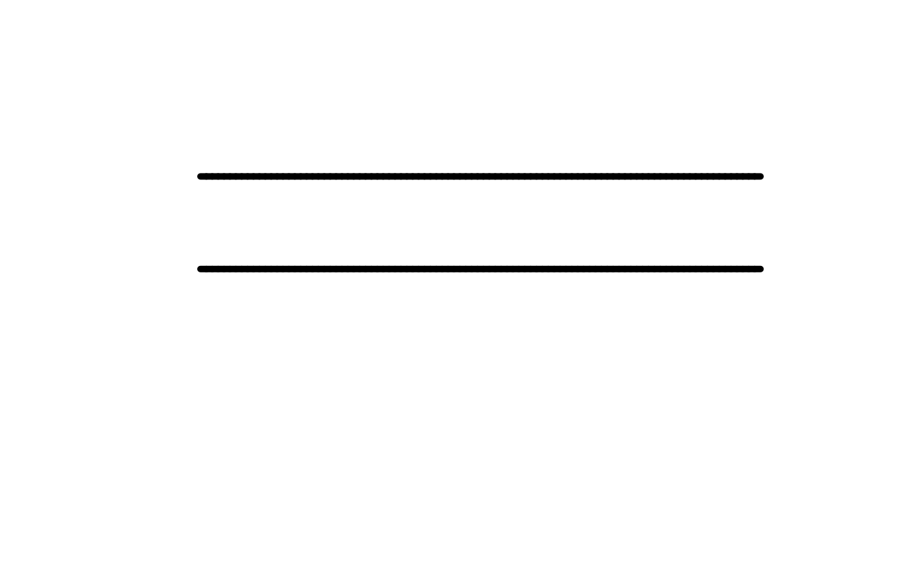

Speed profiles for hand-drawn strokes
Usage
speed_flat(value = 1)
speed_human(
value = 1,
taper = 0.65,
start = 0.55,
end = 0.65,
peak = 1.4,
peak_at = 0.45,
turn_slowdown = 0.45,
min = 0.05
)Arguments
- value
Base speed multiplier.
1preserves the default distance-based timing heuristic, values greater than1draw faster, and values below1draw slower.- taper
How strongly speed changes over the stroke.
0keeps the speed flat;1applies the full profile shape.- start, end
Relative speed at the start and end of a human-style stroke when
taper = 1.- peak
Relative peak speed reached during the stroke when
taper = 1.- peak_at
Position of peak speed along the stroke, in the range
0to1.- turn_slowdown
How strongly speed is reduced at sharp turns.
- min
Minimum speed multiplier returned by the profile.
Value
A speed-profile function for the speed argument of hand() and
human_hand(). Custom functions can also be supplied directly; they must
accept t, normalized stroke progress in the range 0 to 1, turn in
the range 0 to 1, and length, the total stroke length in device
units. Speed profiles return positive speed multipliers. Custom functions
must be vectorized over t and turn, and return either length 1 or
length(t).
Examples
plot.new()
plot.window(c(0, 10), c(0, 10))
draw_rough_lines(c(1, 9), c(8, 8), lwd = 5,
hand = hand(speed = speed_flat(0.5)))
draw_rough_lines(c(1, 9), c(5, 5), lwd = 5,
hand = hand(speed = speed_human()))
